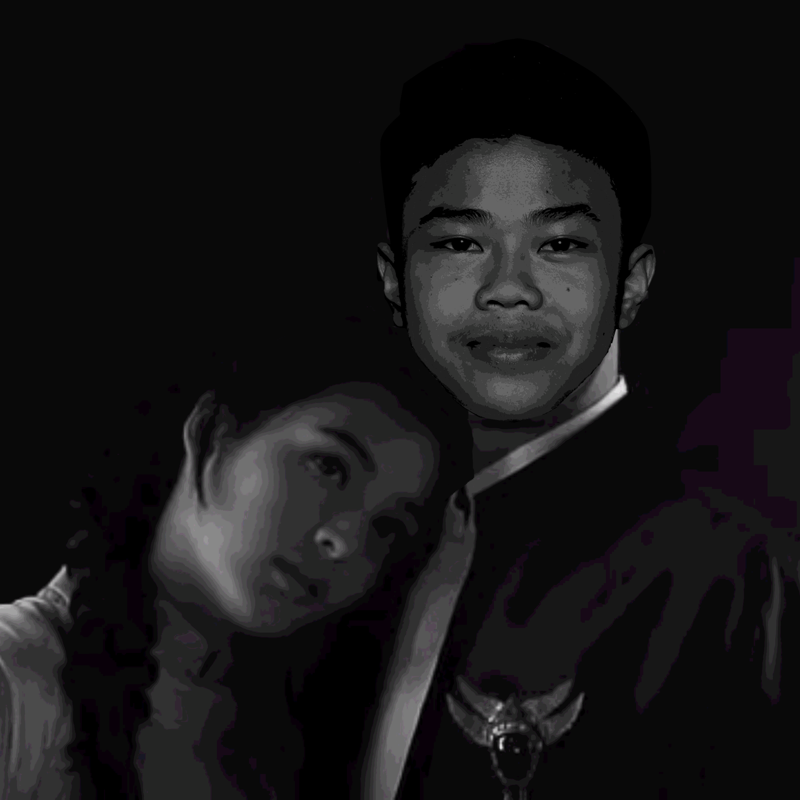
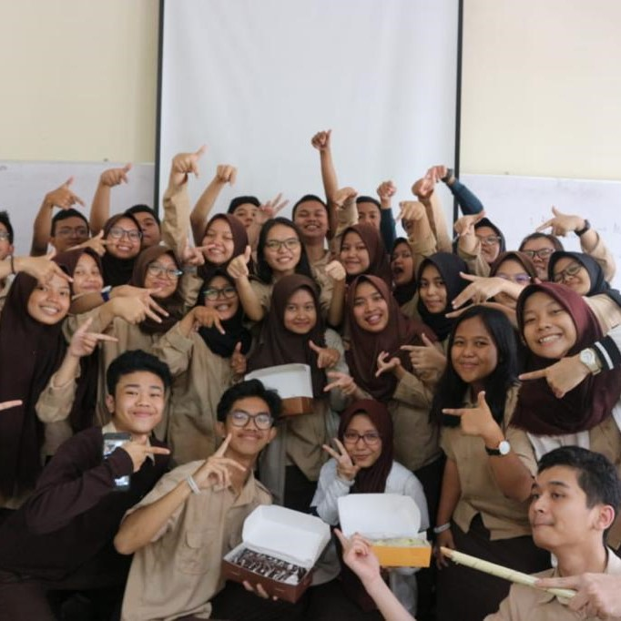

Namaku adit. Sekarang aku bersekolah di Bogor, aku memilih melanjutkan sekolah di sekolah vokasi yang bernama SMK-SMAK Bogor. Udah pada tau beluum itu sekolah apa? Jadi SMK-SMAK Bogor itu sekolah vokasi berbasis kimia, yang hanya mempunyai satu jurusan yaitu analisis kimia. Sekolah ini sangat amat berbeda dengan sekolah lainnya, karena yang pasti terdapat banyak laboratorium dannnn kita akan sekolah disini selama 4 tahun. Jadi, jangan kaget kalau kalian denger ada kelas 13 hehehe. Gimana? Jadi tertarik buat cari tahu banyak hal lagi?
Kalian bisa cari tahu disini
Kalau udah selesai cari-cari informasinya, sekarang yuk kita kenalan!

Iniiii biodataku. Sekarang aku mau ceritain tentang hobi aku, yaitu bermain game. Aku sudah mulai hobi bermain game sejak aku menginjak bangku Taman kanak-kanak. Menurutku, bermain game dapat menghilangkan stress, karena aku banyak masalah dalam kehidupanku, hehe tapi boong:). Aku biasanya bermain game tak kenal waktu, bisa dari pagi sampai pagi, istirahat ya paling cuman buat makan sama solat. Sekarang aku lagi sering bermain game Mobile Legend, aku juga perna mengikuti beberapa tournament lohhh guys, keren ga.... Tapi sayang nya belum pernah jadi juara 1:( Sejak kecil aku sering bermain Playstation, disitu kita bisa mainin game yang seru-seru banget kayak PES, NFS, dan lain-lain. Aku juga hobi menonton film, Aku suka genre thriller. Aku ada rekomendasi film yang seru dan harus kalian tonton, contohnya Parasite, Jigsaw, Up, dan masih banyak lagi.
Buat kalian yang masih pengen tahu tentang aku, bisa langsung follow instagram aku ya @putraa.adityaa atau kalian bisa langsung follow aku dengan cara

Sekarang, mari kita kenanalan dengan teman-temanku. Mereka adalah manusia-manusia yang selalu membuat aku semangat dalam menjalani hidup, mereka yang mengisi kegabutan dan kekosongan hari-hariku, mereka adalah teman-teman ku di Smakbo. Pokoknya kalau aku sudah bersama mereka, gaada kata malu saat bersama mereka, ya seperti menggila bersama, menjulid bersama, saling ledek-ledekan. Pokoknya seruuuu bangett deh, aku juga sayang sama mereka seperti mereka menyayangi aku hehe...Terimakasih teman-temanku telah berhasil membuat hari-hari ku berwarna😘